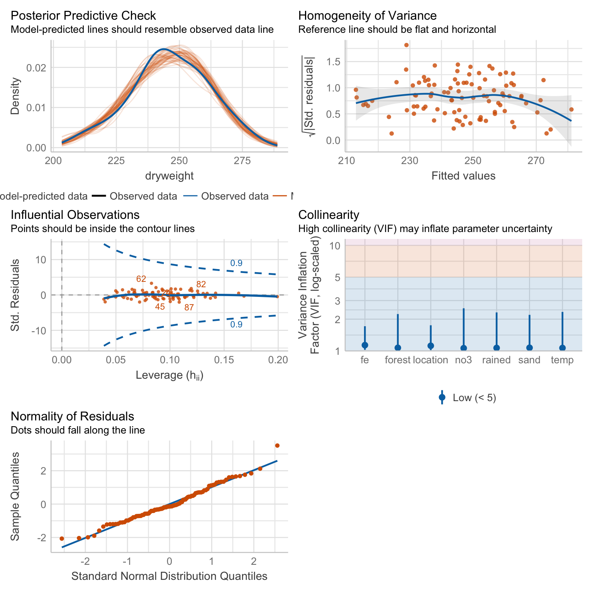

37 Gausian lineare Regression
Version vom September 28, 2022 um 11:59:08

37.1 Genutzte R Pakete für das Kapitel
Wir wollen folgende R Pakete in diesem Kapitel nutzen.
pacman::p_load(tidyverse, magrittr, conflicted, broom,
see, performance, emmeans, multcomp, scales)
conflict_prefer("select", "dplyr")
conflict_prefer("filter", "dplyr")
conflict_prefer("mutate", "dplyr")
cbbPalette <- c("#000000", "#E69F00", "#56B4E9", "#009E73",
"#F0E442", "#0072B2", "#D55E00", "#CC79A7")Am Ende des Kapitels findest du nochmal den gesamten R Code in einem Rutsch zum selber durchführen oder aber kopieren.
37.2 Daten
Wir wollen uns erstmal mit einem einfachen Datenbeispiel beschäftigen. Wir brauchen dafür den Datensatz flea_dog_cat_length_weight.xlsx. In einer simplen linearen Regression schauen wir uns den Zusammenhang zwischen einem \(y\) und einem \(x_1\) an. Daher wählen wir aus dem Datensatz flea_dog_cat_length_weight.xlsx die beiden Spalten jump_length und weight. Wir wollen nun feststellen, ob es einen Zusammenhang zwischen der Sprungweite in [cm] und dem Flohgewicht in [mg] gibt. In dem Datensatz finden wir 400 Flöhe, wir wollen uns aber nur die ersten sieben Zeilen des Datensatzes zuerst anschauen.
gaussian_tbl <- read_csv2("data/flea_dog_cat_length_weight.csv") %>%
mutate(animal = as_factor(animal),
sex = as_factor(sex))In der Tabelle 37.1 ist der Datensatz gaussian_tbl nochmal dargestellt.
| animal | sex | weight | jump_length | flea_count | hatch_time |
|---|---|---|---|---|---|
| cat | male | 6.02 | 15.79 | 5 | 483.6 |
| cat | male | 5.99 | 18.33 | 1 | 82.56 |
| cat | male | 8.05 | 17.58 | 1 | 296.73 |
| cat | male | 6.71 | 14.09 | 3 | 140.9 |
| cat | male | 6.19 | 18.22 | 1 | 162.2 |
| cat | male | 8.18 | 13.49 | 1 | 167.47 |
| … | … | … | … | … | … |
| fox | female | 8.04 | 27.81 | 4 | 424.46 |
| fox | female | 9.03 | 24.02 | 1 | 349.48 |
| fox | female | 7.42 | 24.53 | 3 | 151.43 |
| fox | female | 9.26 | 24.35 | 1 | 182.68 |
| fox | female | 8.85 | 24.36 | 3 | 104.89 |
| fox | female | 7.89 | 22.13 | 2 | 62.99 |
37.3 Fit des Modells
gaussian_fit <- lm(jump_length ~ animal + sex + animal:sex +
weight + flea_count + hatch_time,
data = gaussian_tbl)37.4 Performance des Modells
r2(gaussian_fit)# R2 for Linear Regression
R2: 0.740
adj. R2: 0.736check_heteroscedasticity(gaussian_fit)OK: Error variance appears to be homoscedastic (p = 0.181).check_model(gaussian_fit, colors = cbbPalette[6:8], check = c("qq", "outliers", "pp_check", "homogeneity")) 
37.5 Interpretation des Modells
gaussian_fit %>%
tidy %>%
mutate(p.value = pvalue(p.value))# A tibble: 9 × 5
term estimate std.error statistic p.value
<chr> <dbl> <dbl> <dbl> <chr>
1 (Intercept) 15.3 0.613 24.9 <0.001
2 animaldog 2.73 0.275 9.93 <0.001
3 animalfox 5.33 0.276 19.3 <0.001
4 sexfemale 5.07 0.331 15.3 <0.001
5 weight 0.00536 0.0827 0.0648 0.948
6 flea_count 0.0513 0.0590 0.869 0.385
7 hatch_time -0.0000334 0.000101 -0.332 0.740
8 animaldog:sexfemale -0.235 0.389 -0.606 0.545
9 animalfox:sexfemale -0.276 0.389 -0.709 0.479 37.6 Wie weiter?
emmean_res <- gaussian_fit %>%
emmeans(~ animal, adjust = "bonferroni") NOTE: Results may be misleading due to involvement in interactionsemmean_res %>%
contrast(method = "pairwise") %>%
tidy(conf.int = TRUE) %>%
select(contrast, estimate, adj.p.value, conf.low, conf.high) %>%
mutate(across(where(is.numeric), round, 4)) %>%
mutate(adj.p.value = pvalue(adj.p.value))# A tibble: 3 × 5
contrast estimate adj.p.value conf.low conf.high
<chr> <dbl> <chr> <dbl> <dbl>
1 cat - dog -2.61 <0.001 -3.07 -2.16
2 cat - fox -5.19 <0.001 -5.65 -4.73
3 dog - fox -2.58 <0.001 -3.03 -2.12emmean_res %>%
cld(adjust = "tukey", Letters=letters, details = TRUE)Note: adjust = "tukey" was changed to "sidak"
because "tukey" is only appropriate for one set of pairwise comparisons$emmeans
animal emmean SE df lower.CL upper.CL .group
cat 17.9 0.137 591 17.6 18.2 a
dog 20.5 0.137 591 20.2 20.9 b
fox 23.1 0.138 591 22.8 23.4 c
Results are averaged over the levels of: sex
Confidence level used: 0.95
Conf-level adjustment: sidak method for 3 estimates
P value adjustment: tukey method for comparing a family of 3 estimates
significance level used: alpha = 0.05
NOTE: Compact letter displays can be misleading
because they show NON-findings rather than findings.
Consider using 'pairs()', 'pwpp()', or 'pwpm()' instead.
$comparisons
contrast estimate SE df t.ratio p.value
dog - cat 2.61 0.194 591 13.458 <.0001
fox - cat 5.19 0.194 591 26.700 <.0001
fox - dog 2.58 0.195 591 13.207 <.0001
Results are averaged over the levels of: sex
P value adjustment: tukey method for comparing a family of 3 estimates